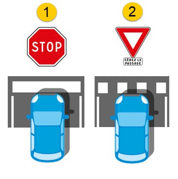

Les règles de priorité
En France, lorsqu’il n’y a pas de règles de priorité explicitement formulée grâce à un élément de signalisation, c’est automatiquement la règle de la priorité à droite qui s’applique. Dans les autres cas, ce sont les panneaux de signalisation de priorité, de STOP et de "cédez-le-passage" que les usagers devront suivre afin de respecter les règles de priorité en vigueur. Bien connaître les règles de priorité et les situations dans lesquelles elles s’appliquent est nécessaire pour tous les candidats souhaitant obtenir leur code de la route.

Les panneaux de priorité
Lorsque, durant un trajet, le conducteur croise l’un des panneaux de signalisation ci-dessous, il doit être particulièrement attentif aux règles de priorité à respecter, afin d'adopter une conduite sécurisée. En effet, les refus de priorité étaient impliqués dans près d'un accident mortel sur 9 en 2016.

Panneau 1: face à un panneau de priorité à droite, le conducteur sait qu'il devra laisser la priorité aux autres usagers venant de sa droite. L'implantation de ce panneau est facultative, la priorité à droite étant la règle à appliquer en cas d'absence de signalisation à une intersection. Ce panneau n'est généralement mise en place qu'au niveau des intersections dangereuses.
Panneaux 2 et 3: le second panneau de signalisation indique que l’usager circule sur une route prioritaire. Aussi, même lorsqu’ils abordent une intersection, ce sont les véhicules qui circulent sur la voie qui comprend cet élément de signalisation qui conservent la priorité sur les autres usagers de la route.
Les usagers doivent cependant faire preuve de prudence lorsqu'ils rencontre le troisième panneau, car il met fin au caractère prioritaire de la route. Aussi, le conducteur devra être particulièrement vigilant quant à la signalisation pour connaître les règles de priorité.
Panneau 4: Lorsqu'un usager croise ce quatrième panneau durant un trajet, cela signifie que les autres usagers devront lui céder le passage à la prochaine intersection. Les conducteurs doivent cependant garder à l'esprit qu'il s'agit d’une priorité ponctuelle, et qu'elle ne concerne que les véhicules qui iront tout droit au niveau de cette intersection spécifique.
Le panneau et le marquage au sol du "Stop"
En présence d’un panneau Stop, les règles de priorité sont très simples. Les véhicules circulant sur la voie en face de ce dernier doivent impérativement céder la priorité aux autres usagers. De plus, le Stop est assorti d’un marquage au sol prenant la forme d’une ligne blanche continue. Cette ligne ne doit être franchie qu'après que l'usager se soit assuré qu'il peut s'insérer le long de la voie, ceci en vérifiant si d'autres conducteurs prioritaires circulent ou non sur la voie. Il est important de garder à l’esprit que même si la visibilité est bonne et qu’aucune voiture ne vient par la droite, chaque conducteur a l’obligation de s’arrêter afin de respecter cette règle de priorité.
Le panneau et le marquage au sol du "cédez-le-passage"
Contrairement au panneau Stop, les panneaux de "cédez-le-passage" n’imposent pas l'arrêt du véhicule. Dans la plupart des cas, il suffit que le conducteur soit attentif à la circulation pour savoir s’il lui faut décélérer ou marquer un temps d’arrêt avant de s’engager. Cependant, en présence de certains panonceaux, il est possible qu’un panneau de "cédez-le-passage" soit implanté afin de prévenir les usagers qu'ils rencontreront bientôt un panneau STOP.
Les règles de priorité ont été instaurées dans le Code de la route afin de fluidifier la circulation. En respectant les règles de priorité, chaque conducteur contribue à éviter la formation d’embouteillages ou d'accidents de la route.